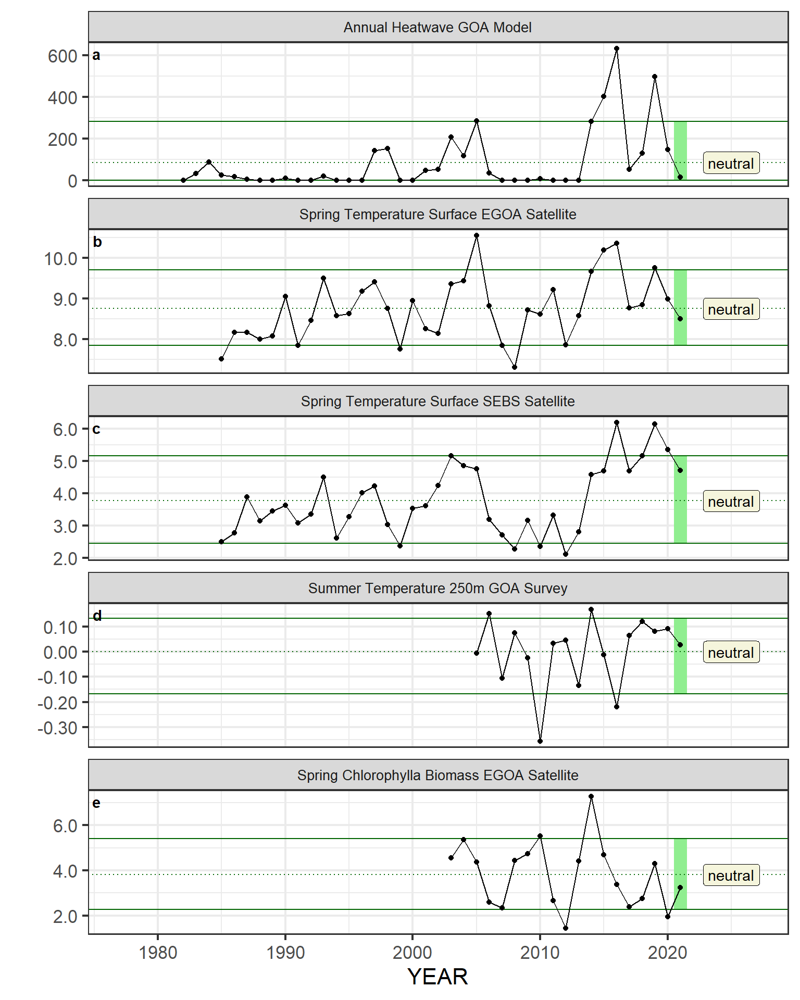
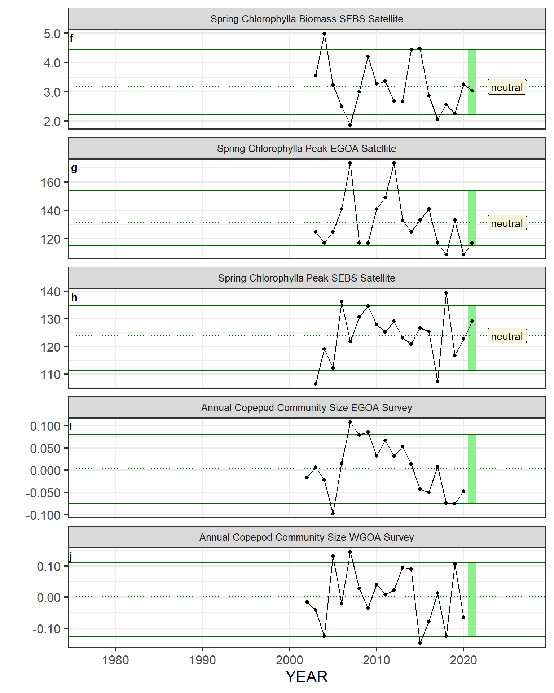
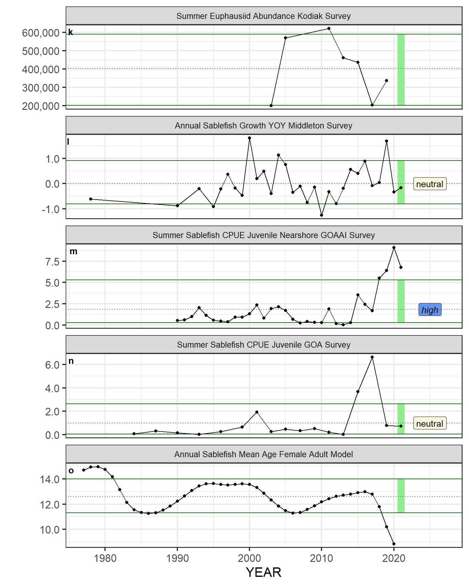
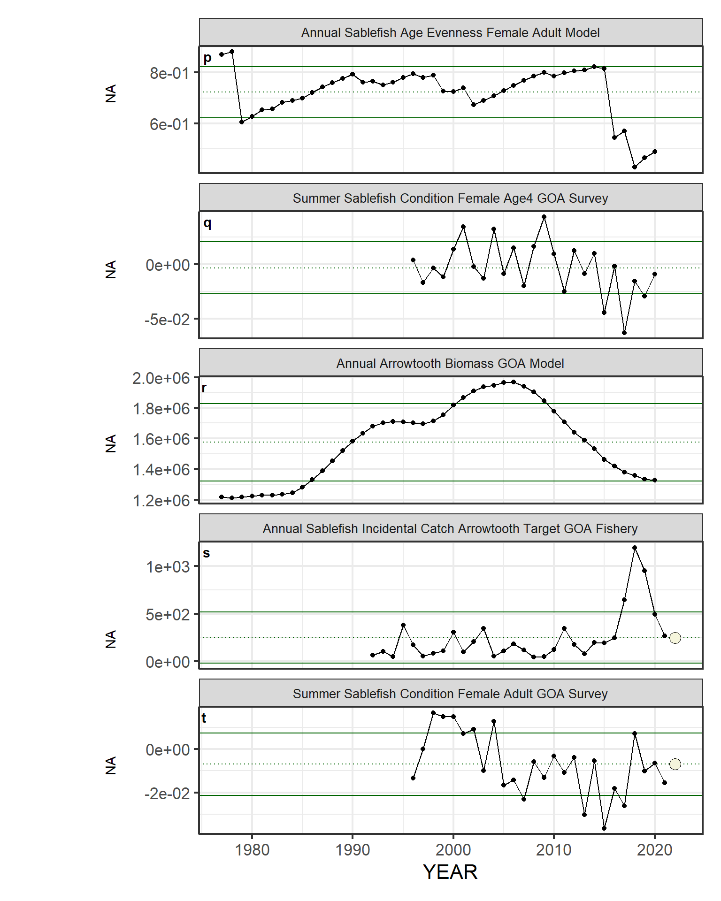
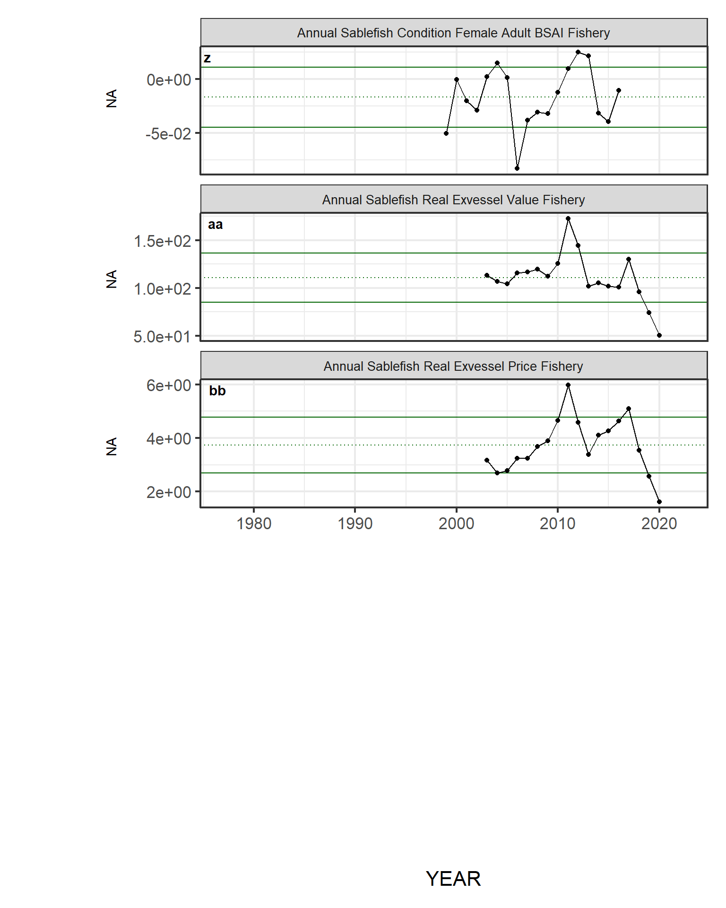

3.2 Functions to create figures and tables
After installing the package, you can use the functions to create figures. You can use your own input data, or you can use some of the prior ESP data that is included in the package. When you run these functions locally, it will probably be more helpful to set out = "save" and specify a file name for the plot so that the plots are saved rather than displayed in RStudio. This is because the plots all display a large amount of data that will be very squashed in the RStudio image viewer. You may also need to adjust the width and height options to produce a figure of satisfactory dimensions.
3.2.1 Metrics panel
AKesp::esp_metrics(
data = AKesp::metric_panel,
species = "Sablefish",
region = "GOA",
approved = TRUE,
order = TRUE,
out = "ggplot"
)
3.2.2 Correlation matrices
dat <- AKesp::get_esp_data("Alaska Sablefish") %>%
AKesp::check_data() # add NA columns if any columns are missing
AKesp::esp_cor_matrix_long(
data = dat,
out = "ggplot"
)

3.2.4 Traffic plots
Traffic light plots are broken into multiple images, each with 5 plots.
AKesp::esp_traffic_long(
data = dat,
paginate = TRUE,
out = "ggplot",
silent = TRUE
)





3.2.5 Tables from spreadsheets
Tables can be automatically created from the table_spreadsheet.csv and the .csv files in the tables folder. Additionally, the AKesp package can also create some tables that require data analysis.
3.2.6 Traffic light score table
A traffic light table can be automatically created from a spreadsheet that has a column for year and a column for each indicator.
AKesp::esp_traffic_tab_long(
data = dat,
year = 2021
)Indicator category | Indicator | 2021 Status |
Physical | Annual Heatwave GOA Model | neutral |
Spring Temperature Surface EGOA Satellite | neutral | |
Spring Temperature Surface SEBS Satellite | neutral | |
Summer Temperature 250m GOA Survey | neutral | |
Lower Trophic | Spring Chlorophylla Biomass EGOA Satellite | neutral |
Spring Chlorophylla Biomass SEBS Satellite | neutral | |
Spring Chlorophylla Peak EGOA Satellite | neutral | |
Spring Chlorophylla Peak SEBS Satellite | neutral | |
Annual Sablefish Growth YOY Middleton Survey | neutral | |
Upper Trophic | Summer Sablefish CPUE Juvenile Nearshore GOAAI Survey | high |
Summer Sablefish CPUE Juvenile GOA Survey | neutral | |
Annual Sablefish Incidental Catch Arrowtooth Target GOA Fishery | neutral | |
Summer Sablefish Condition Female Adult GOA Survey | neutral | |
Fishery Performance | Annual Sablefish Longline CPUE GOA Fishery | neutral |
Annual Sablefish Pot CPUE EBS Fishery | high | |
Annual Sablefish Incidental Catch GOA Fishery | low | |
Annual Sablefish Incidental Catch BSAI Fishery | high | |
Annual Sablefish Condition Female Adult GOA Fishery | low | |
Annual Sablefish Condition Female Adult BSAI Fishery | NA |
Multiple years can be shown.
AKesp::esp_traffic_tab_long(
data = dat,
year = 2017:2021
)Indicator category | Indicator | 2017 Status | 2018 Status | 2019 Status | 2020 Status | 2021 Status |
Physical | Annual Heatwave GOA Model | neutral | neutral | high | neutral | neutral |
Spring Temperature Surface EGOA Satellite | neutral | neutral | high | neutral | neutral | |
Spring Temperature Surface SEBS Satellite | neutral | high | high | high | neutral | |
Summer Temperature 250m GOA Survey | neutral | neutral | neutral | neutral | neutral | |
Lower Trophic | Spring Chlorophylla Biomass EGOA Satellite | neutral | neutral | neutral | low | neutral |
Spring Chlorophylla Biomass SEBS Satellite | low | neutral | low | neutral | neutral | |
Spring Chlorophylla Peak EGOA Satellite | neutral | low | neutral | low | neutral | |
Spring Chlorophylla Peak SEBS Satellite | low | high | neutral | neutral | neutral | |
Annual Copepod Community Size EGOA Survey | neutral | low | low | neutral | NA | |
Annual Copepod Community Size WGOA Survey | neutral | low | high | neutral | NA | |
Summer Euphausiid Abundance Kodiak Survey | low | NA | neutral | NA | NA | |
Annual Sablefish Growth YOY Middleton Survey | neutral | neutral | high | neutral | neutral | |
Upper Trophic | Summer Sablefish CPUE Juvenile Nearshore GOAAI Survey | neutral | high | high | high | high |
Summer Sablefish CPUE Juvenile GOA Survey | high | NA | neutral | NA | neutral | |
Annual Sablefish Mean Age Female Adult Model | neutral | neutral | low | low | NA | |
Annual Sablefish Age Evenness Female Adult Model | low | low | low | low | NA | |
Summer Sablefish Condition Female Age4 GOA Survey | low | neutral | low | neutral | NA | |
Annual Arrowtooth Biomass GOA Model | neutral | neutral | neutral | neutral | NA | |
Annual Sablefish Incidental Catch Arrowtooth Target GOA Fishery | high | high | high | neutral | neutral | |
Summer Sablefish Condition Female Adult GOA Survey | low | neutral | neutral | neutral | neutral | |
Fishery Performance | Annual Sablefish Longline CPUE GOA Fishery | low | low | low | neutral | neutral |
Annual Sablefish Pot CPUE EBS Fishery | neutral | neutral | high | high | high | |
Annual Sablefish Incidental Catch GOA Fishery | neutral | high | high | high | low | |
Annual Sablefish Incidental Catch BSAI Fishery | neutral | neutral | high | high | high | |
Annual Sablefish Condition Female Adult GOA Fishery | neutral | neutral | neutral | high | low | |
Annual Sablefish Condition Female Adult BSAI Fishery | NA | NA | NA | NA | NA | |
Economic | Annual Sablefish Real Exvessel Value Fishery | neutral | neutral | low | low | NA |
Annual Sablefish Real Exvessel Price Fishery | high | neutral | low | low | NA |